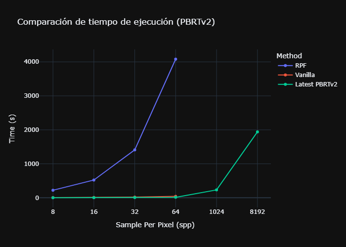
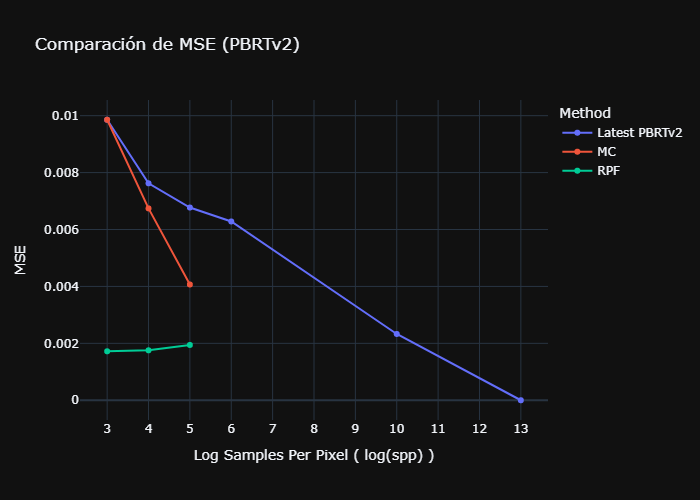
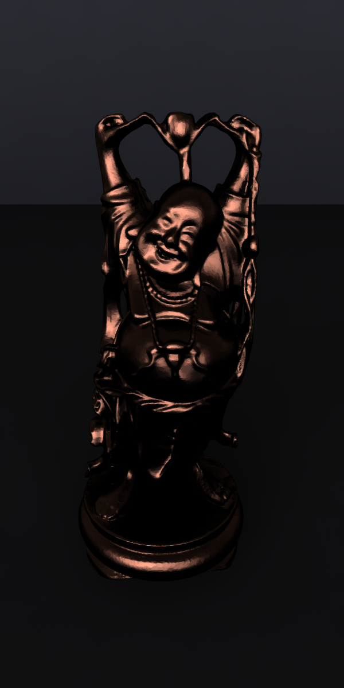

Proyecto
El presente proyecto busca replicar el trabajo presentado por Pradeep Sen y Soheil Darabi en su artículo On Filtering the Noise from the Random Parameters in Monte Carlo Rendering.
Objetivos
-
Crear un ambiente dockerizado para la compilación y ejecución de la implementación de RPF en PBRTv2
-
Experimentar y contrastar los resultados obtenidos con la implementación original
Integrantes
- Rodrigo Gabriel Salazar Alva
- Alvaro Guerrero Jiménez
Codigo Fuente: RPF
Recursos Adicionales
- Presentación: Descargar
- Repositorio de Docker PBRTv2: Docker PBRTv2 (Ultima version de PBRTv2. Compilable dentro del mismo entorno docker que la implementación RPF)
- Repositorio de Docker PBRTv3 : Docker PBRTv3 (Docker + Implementación parcial de RPF en PBRTv3)
- Escena para PBRTv3: Descargar
- Collección de escenas para PBRTv2: Descargar
Justificación Teórica
RayTracing y Monte-Carlo
Los sistemas de RayTracing fotorrealistas como PBRT buscan simular la interacción de la luz con los objetos de una escena para generar imagenes de alta calidad.
Desde una perspectiva teórica, la radiancia que recibe un pixel puede ser descrito como una integral sobre multiples parametros, incluyendo pero no limitandose a la posición en el plano de proyección (x,y), las cordenadas de intersección con el lente (u,v) y el tiempo de la captura (t).
Los sistemas de Monte-Carlo buscan aproximar esta función mediante el muestreo aleatorio de los parametros de la integral. Sin embargo, la calidad de la imagen generada depende de la cantidad de muestras tomadas, lo que puede resultar en imagenes con ruido. Debido a que el ruido es inversamente proporcional al numero de muestras, las mejoras en la calidad de la imagen requieren un incremento exponencial en el numero de muestras, lo que resulta en un costo computacional prohibitivo.
Propuesta: Random Parameter filtering
La técnica de Random Parameter Filtering (RPF) busca reducir el numero de muestras necesarias para obtener una imagen de calidad.
Este algoritmo se basa en la hipotesis de que se puede mejorar la aproximación de radiancia de un pixel incoporando información de pixeles cercanos, tomando en consideración las dependencias en los parametros aleatorios y los features de las muestras. Para ello, se implementa un filtro bilateral cruzado ajustado a estas dependencias.
Esta propuesta es un algoritmo de postprocesamiento que se aplica a la imagen generada por un renderizador Monte-Carlo, por lo que es independiente al metodo de muestreo utilizado.
Algoritmo
El algoritmo propuesto por los investigadores consiste en un filtro que se evalua en iteraciones de tamaños de caja decrecientes. En cada pasada de filtro, el algoritmo realiza los siguientes pasos
- Construye un vecindario de muestras a una distancia maxima igual al tamaño de caja actual (usando Gaussian sampling)
- Filtra el vecindario en base al numero de desviaciones estandar de diferencia entre los features de las muestras y el promedio del pixel original
- Para cada muestra se calcula los hiperparametros Alfa y Beta en base a las dependencias entre parametros aleatorios, features y colores (usando aproximación mediante sumas de información mutua)
- Calcula el peso del filtro en base a la similitud de colores y features
- Se actualizan las muestras del pixel
Estos pasos permiten combinar las muestras de un pixel con sus vecinos de acuerdo a la similitud de sus features y colores, reduciendo el ruido en la imagen generada.
Compilación y Ejecucción
Docker
Se provee un Dockerfile que construye un ambiente dockerizado con todas las dependencias necesarias para compilar y ejecutar la implementación de RPF en PBRTv2.
Detalles destacables:
- Imagen base: Ubuntu 22.04
- Instalación de dependencias
- Patch personalizado de la libreria de OpenEXR para compatibilidad con PBRTv2
El comando make docker construye la imagen docker y el comando make shell ejecuta la imagen docker en un contenedor interactivo. Tomar en consideración que los pasos posteriores asumen que se encuentra dentro del contenedor docker.
Compilación
Se utiliza scons como herramienta de compilación.
Se compilan tres versiones de PBRTv2:
Comando: cd ./pbrt-v2-rpf/src && scons
Ejecucción
Para ejecutar el programa se debe correr el siguiente comando desde el directorio raiz del proyecto:
./pbrt-v2-rpf/build/linux-release/pbrt [--outfile <archivo de salida>] <archivo de escena>
Donde [--outfile <archivo de salida>] es el archivo donde se guardará la imagen renderizada y <archivo de escena> es el archivo de escena a renderizar.
Se proveen escenas de prueba en la carpeta ./scenes.
Para ejecutar el test de rendimiento con diferentes parametros se puede ejecutar la script de python runtest.py desde el directorio raiz del proyecto.
Resultados
Comparación Cualitativa
A continuación se presentan los resultados de renderizar la escena ./scenes/Conference.pbrt con y sin RPF (spp=8).
Adicionalmente, se incluye una imagen de referencia de renderizar la misma escena en la versión más reciente de PBRTv2 sin RPF con un spp de 8192.
Sin RPF (8spp)
Tiempo de ejecucción: 5s

Con RPF (8spp)
Tiempo de ejecucción: 3 min 4s
Latest PBRTv2 (8096spp)
Tiempo de ejecucción: 32min 20s

Note como primer punto que incluso con 8192 spp, la imagen generada por PBRTv2 sin RPF presenta ruido, lo que demuestra la problematica de la relación costo-calidad en los sistemas de Monte-Carlo.
En lo que respecto a la comparación entre las imagenes generadas con y sin RPF, se puede observar como la implementación de RPF logra reducir el ruido en la imagen generada, comparable con el resultado de la versión más reciente de PBRTv2 sin RPF con un spp de 8192. Sin embargo, se observan diferencias en la fidelidad de las sombras, las cuales son más suaves en la imagen generada por RPF. El algoritmo sácrifica la fidelidad de las sombras para reducir el ruido en la imagen. Esto se nota particularmente en las sombras de las sillas y el techo.
Experimentos Cuantitativos
Tiempo de ejecucción

Error Cuadrado Medio

Structural Similarity Index Metric
Tomar en consideración como primer punto a destacar que la implementación disponible de RPF hace un uso excesivo de memoria, por lo que se ha limitado el numero maximo de muestras a 64 spp. En la versión moderna de PBRTv2, si ha sido posible renderizar la escena con 8192 spp. No obstante, esta no es una comparación totalmente justa dado a que la versión más moderna de PBRTv2 ha sido optimizada y mejorada en varios aspectos.
A pesar de ello, podemos observar que las ejecucciones de RPF con 32 o menos spp tienen un tiempo de ejecucción menores a la imagen de referncia y presentan una significativa mejora en las métricas de error y similitud estructural. Sin embargo, a medida que se incrementa el numero de spp, el tiempo de ejecucción de RPF se dispara, sin una mejora significativa en las métricas de calidad.
Las observaciones realizadas sugieren que el algoritmo de RPF es efectivo en casos de uso con un numero bajo de muestras, pero pierde efectividad a medida que se incrementa el numero de muestras. Esto se debe a que el algoritmo se basa en la similitud de features y colores entre las muestras, lo que se vuelve más dificil de calcular a medida que se incrementa el numero de muestras.
Imágenes generadas
Sin RPF (8spp)
Con RPF (8spp)

Sin RPF (8spp)
Con RPF (8spp)
Sin RPF (8spp)

Con RPF (8spp)

Sin RPF (8spp)
Con RPF (8spp)
Sin RPF (8spp)
Con RPF (8spp)
Sin RPF (8spp)
Con RPF (8spp)
Sin RPF (8spp)
Con RPF (8spp)
Sin RPF (8spp)
Con RPF (8spp)
Sin RPF (8spp)

Con RPF (8spp)
Sin RPF (8spp)
Con RPF (8spp)